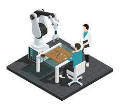
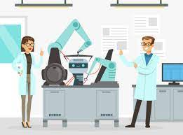
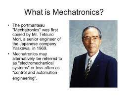
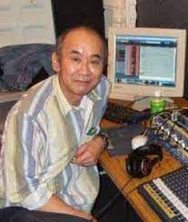
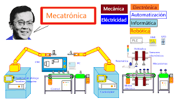
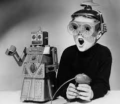

Mecatrónica
Autor:Areli Berenice Diaz Jimenez
Definición
 
La mecatrónica es una disciplina interdisciplinaria que combina elementos de la ingeniería mecánica, electrónica, informática y control automático para diseñar y crear sistemas y productos que incorporen tanto componentes mecánicos como electrónicos, y que sean capaces de realizar tareas automatizadas o controladas por computadora. En otras palabras, la mecatrónica busca integrar la mecánica, la electrónica y la informática para desarrollar sistemas y productos que sean más eficientes, precisos y versátiles en una variedad de aplicaciones, como la automatización industrial, la robótica, los vehículos autónomos y la electrónica de consumo. Esta disciplina se ha vuelto fundamental en la innovación tecnológica y la mejora de la eficiencia en una amplia gama de industrias.
¿Quién es el padre de la mecatrótica?
   
En 1969, Tetsuro Mori, ingeniero de la empresa japonesa Yaskawa Electric Co., acuña el término mecatrónica, y en 1971 se le otorga el derecho de marca. En 1982 Yaskawa permite el libre uso del término.